Install SSL certificate on Palo Alto Networks or Cisco ASA Firewalls
Overview
Firewalls require SSL certificates in one of the following scenarios:
- Secure management WebGUI access
- Provide SSL-based remote VPN
- Perform peer authentication to establish Site-To-Site VPN tunnels
Administrator’s tasks include obtaining a certificate either through public or enterprise Certificate Authority, certificate renewal and ensuring that the private key is safe and backed up.
This article describes basic concepts of a SSL certificate and step-by-step instruction on how to obtain SSL certificate, back it up and restore if the device fail.
Diagram below shows steps required to obtain a SSL certificate.
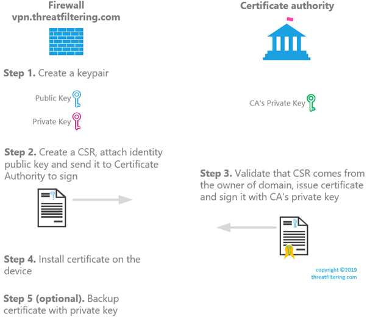Installation process starts with generation of a key pair.
What is a private and public key?
Asymmetric cryptography algorithm, in contrast to symmetric one, requires two different keys to encrypt and decrypt a message. Private key should be kept in secret and public one can be freely distributed.
Public key is derived using mathematical function from private key. Together they form a key pair.
Two algorithms supported by both ASA and Palo Alto firewalls are RSA (mature) and ECDSA (Elliptic Curve, more efficient).
Step 1. Generate a key pair
ASA firewall using ASDM
The process of generating a key pair on ASA in ASDM is initiated via Identity Certificate menu. Navigate to Configuration > Device Management > Certificate Management > Identity Certificates and press Add button.
As shown in the screenshot above, a key pair named <Default-RSA-Key> is selected by default. Press New button next to Key Pair name to create either RSA or ECDSA key. See the figure below with RSA new key pair being created.
ASA firewall using CLI
Select algorithm to use:
ASA01(config)# crypto key generate ?
configure mode commands/options:
ecdsa Generate ECDSA keys
rsa Generate RSA keys
Example of RSA keys generation:
ASA01(config)# crypto key generate rsa ?
configure mode commands/options:
general-keys Generate a general purpose RSA key pair for signing and
encryption
label Provide a label
modulus Provide number of modulus bits on the command line
noconfirm Specify this keyword to suppress all interactive prompting.
usage-keys Generate separate RSA key pairs for signing and encryption
ASA01(config)# crypto key generate rsa general-keys label TFKeyPair modulus ?
configure mode commands/options:
1024 1024 bits
2048 2048 bits
4096 4096 bits
512 512 bits
768 768 bits
ASA01(config)# crypto key generate rsa general-keys label TFKeyPair modulus 2048
INFO: The name for the keys will be: TFKeyPair
Keypair generation process begin. Please wait…
Example of ECDSA keys generation:
ASA01(config)# crypto key generate ecdsa label TFKeyPair-ECDSA ?
configure mode commands/options:
elliptic-curve Choose the Elliptic Curve
noconfirm Specify this keyword to suppress all interactive prompting.
ASA01(config)# crypto key generate ecdsa label TFKeyPair-ECDSA elliptic-curve ?
configure mode commands/options:
256 256 bits
384 384 bits
521 521 bits
ASA01(config)# crypto key generate ecdsa label TFKeyPair-ECDSA elliptic-curve 521
INFO: The name for the keys will be: TFKeyPair-ECDSA
Keypair generation process begin. Please wait…
Use this command to display list of keypairs. To extract private key, you will need to export it together with identity certificate in PKCS#12 format (this will be demonstrated in Step 5):
ASA01# show crypto key mypubkey rsa
Key pair was generated at: 12:17:57 GMT Jun 18 2019.
Key name: TFKeyPair
Usage: General Purpose Key
Modulus Size (bits): 2048
Storage: config
Key Data:
30820122 300d0609 2a864886 f70d0101 01050003 82010f00 3082010a 02820101
00d76663 f541db49 3a7c96bc ee5c8266 f411a0c4 65327846 ed2c5c61 89b04576
5a306d0e ec18e3d4 b8545961 50d8bdb8 e58a76a3 9acf028f 82f9c8e6 78d42389
ef0ba0a4 a0c71881 fdb300b9 dd4d0bd2 2b884403 4998839f 70fc79de fbcf5b37
446a68fc 6012b986 4d4a690b 20684231 fd388c6c 1619bac9 1aedba9f a1602dea
56907c8b 887477c5 e3e9e590 6f5f429f 15ece9f4 cf64d98b d94ad783 7d5fac83
e58bfd7c ee43894a 8d7b6730 092dff7e 35bda58a 9e606d26 456079ee b6348dcc
70a0f535 5033f1e1 889f52ae 56d126d2 64335ec4 625cddea 4103b8ca 5c8aa0e5
1c086062 a764f63c d011a2a5 e07ab69c af03ee5e a90c10dc cb125f95 030a870e
f1020301 0001
Palo Alto Firewall
Key pair in Palo Alto firewall cannot be generated without creating a CSR, so it will be covered as part of the Step 2.
Step 2. Create a CSR
What is PKCS?
Public-Key Cryptography Standards are published by RSA Labs. Some of these standards are around cryptography implementation and some define formats of the message containers, for example:
- PKCS#7 – is container for certificates used to distribute certificates
- PKCS#10 – defines how CSR must be formatted
- PKCS#12 – contains certificate, private key and CA certificate. It is used to backup and move identity certificates between systems. To secure private key PKCS#12 requires password protection.
ASA firewall using ASDM
What is Trustpoint in ASA?
Trustpoints is a certificate in ASA’s terminology. It can represent identity certificate, in which case it will have corresponding private key. Or it can be CA’s certificate.
After completing Step 1 in ASDM, type-in locally significant Trustpoint name, as shown in the figure below.
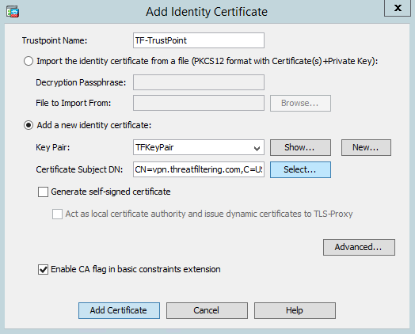Instead of typing Certificate Subject DN, press Select button and add required attributes. See the screenshot below with the number of attributes filled-in.
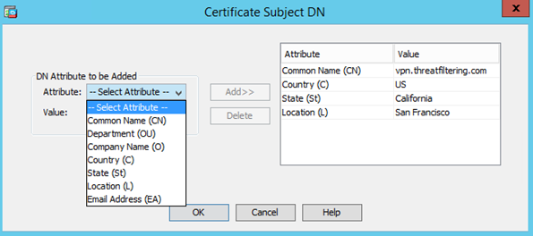Press OK to close the window and then Add Certificate button. Press Advanced button and type-in FQDN to match common name. By default, it will be set-up to the actual hostname of the firewall, which may or not may not be URL your users trying to use when reaching SSL VPN or management interface of the firewall.
If it differs from common name, the FQDN will be added as Subject Alternative Name (SAN) of the certificate.
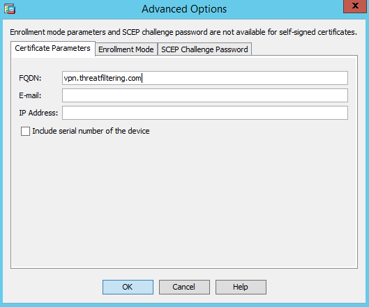Pop-up window will be shown prompting for a location to save CSR request. This file will be used later to send request to CA.
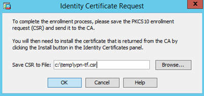It is a ASCII (Base64) encoded as shown in the screenshot below:
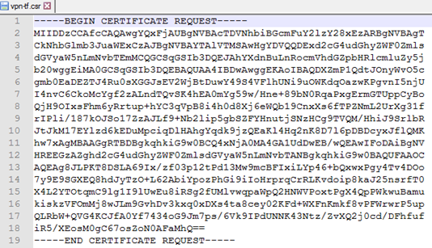The certificate is now in pending state waiting for CA to approve and sign it.
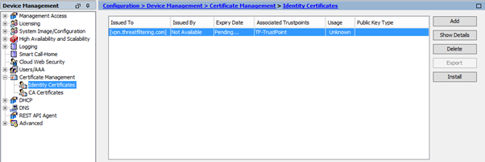ASA firewall using CLI
The following configuration achieves the same result as ASDM-based configuration.
ASA01(config)# crypto ca trustpoint TF-TrustPoint
ASA01(config-ca-trustpoint)# enrollment terminal
ASA01(config-ca-trustpoint)# fqdn vpn.threatfiltering.com
ASA01(config-ca-trustpoint)# subject-name CN=vpn.threatfiltering.com,C=US,St=California,L=San Francisco
ASA01(config-ca-trustpoint)# keypair TFKeyPair
ASA01(config-ca-trustpoint)# crl configure
ASA01(config-ca-crl)# exit
To display CSR in the console window see example in the listing below.
ASA01(config)# crypto ca enroll TF-TrustPoint
WARNING: The certificate enrollment is configured with an fqdn
that differs from the system fqdn. If this certificate will be
used for VPN authentication this may cause connection problems.
Would you like to continue with this enrollment? [yes/no]: yes
% Start certificate enrollment ..
% The subject name in the certificate will be: CN=vpn.threatfiltering.com,C=US,St=California,L=San Francisco
% The fully-qualified domain name in the certificate will be: vpn.threatfiltering.com
% Include the device serial number in the subject name? [yes/no]: no
Display Certificate Request to terminal? [yes/no]: yes
Certificate Request follows:
-----BEGIN CERTIFICATE REQUEST-----
MIIDDzCCAfcCAQAwgYQxFjAUBgNVBAcTDVNhbiBGcmFuY2lzY28xEzARBgNVBAgT
CkNhbGlmb3JuaWExCzAJBgNVBAYTAlVTMSAwHgYDVQQDExd2cG4udGhyZWF0Zmls
dGVyaW5nLmNvbTEmMCQGCSqGSIb3DQEJAhYXdnBuLnRocmVhdGZpbHRlcmluZy5j
b20wggEiMA0GCSqGSIb3DQEBAQUAA4IBDwAwggEKAoIBAQDXZmP1QdtJOnyWvO5c
gmb0EaDEZTJ4Ru0sXGGJsEV2WjBtDuwY49S4VFlhUNi9uOWKdqOazwKPgvnI5njU
I4nvC6CkoMcYgf2zALndTQvSK4hEA0mYg59w/Hne+89bN0RqaPxgErmGTUppCyBo
QjH9OIxsFhm6yRrtup+hYC3qVpB8i4h0d8Xj6eWQb19CnxXs6fTPZNmL2UrXg31f
rIPli/187kOJSo17ZzAJLf9+Nb2lip5gbSZFYHnutjSNzHCg9TVQM/HhiJ9SrlbR
JtJkM17EYlzd6kEDuMpciqDlHAhgYqdk9jzQEaKl4Hq2nK8D7l6pDBDcyxJflQMK
hw7xAgMBAAGgRTBDBgkqhkiG9w0BCQ4xNjA0MA4GA1UdDwEB/wQEAwIFoDAiBgNV
HREEGzAZghd2cG4udGhyZWF0ZmlsdGVyaW5nLmNvbTANBgkqhkiG9w0BAQUFAAOC
AQEAg8JLPKT8DSLA69Ix/zf03p12tPd13Mw9mcBFIxiLYp46+bQxwxPgy4Tv4DOo
7y9E9SGXEQ8hdJyTzO+L62AbiYpozPhGi9iIoHrprqCrRLKvdoip8kaJ25nsrfT0
X4L2YTOtqmC9lg1I9lUwEu8iRSg2fUMlvwqpaWpQ2HNWVPoxtPgX4QpPWkwuBamu
kiskzVFOmMj8wJLm9GvhDv3kxq0xDXs4ta8cey02KFd+WXFnKmkf8vPFWrwrP5up
QLRbW+QVG4KCJfA0Yf7434oG9Jm7ps/6Vk9IPdUNNK43Ntz/ZvXQ2j0cd/DFhfuf
iR5/XEosM0gC67osZoN0AFaMhQ==
-----END CERTIFICATE REQUEST-----
Palo Alto Firewall using WebGUI
Log-in into WebGUI and click on the Device tab. Then select Certificate Management > Certificates menu on the left. Then click Generate button located on the bottom menu.
Configuration menu is shown below and has familiar options, such as certificate common name and cryptographic settings for key pair, such as RSA or ECDSA.
PAN-OS WebGUI doesn’t provide option to separately generate a key pair.
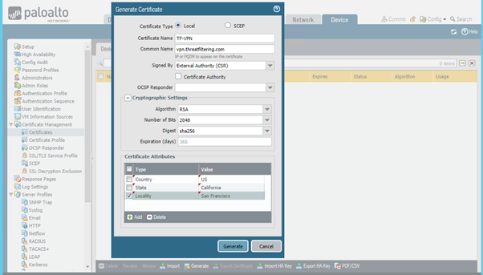Press Generate button and certificate will appear in the list. Notice that Key checkbox is selected, as we have private key corresponding to this certificate. To export CSR click on the certificate and then press Export Certificate button (yes, it exports CSR for not issued certificates).
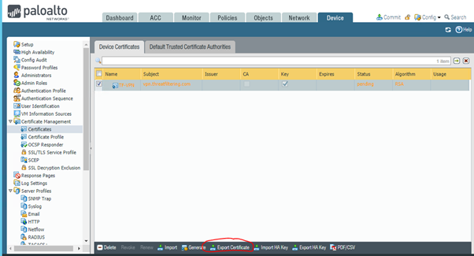Palo Alto Firewall using CLI
See the listing below with the command required to generate CSR.
admin@PA> request certificate generate
ca Make this a signing certificate
country-code Country code
days-till-expiry Number of days till expiry
digest Digest Algorithm
email Email address of the contact person
filename file name for the certificate
locality Locality
ocsp-responder-url ocsp-responder-url
organization Organization
signed-by signed-by
state State/province
algorithm algorithm
certificate-name Name of the certificate object
name IP or FQDN to appear on the certificate
alt-email Subject alternate Email type
hostname Subject alternate name DNS type
ip Subject alternate name IP type
organization-unit Department
admin@PA> request certificate generate country-code US state California locality "San Francisco" name vpn.threatfiltering.com algorithm RSA
rsa-nbits Length of the key
certificate-name Name of the certificate object
admin@PA> request certificate generate country-code US state California locality "San Francisco" name vpn.threatfiltering.com algorithm RSA rsa-nbits
1024 1024
2048 2048
3072 3072
4096 4096
512 512
Length of the key
admin@PA> request certificate generate country-code US state California locality "San Francisco" signed-by external name vpn.threatfiltering.com algorithm RSA rsa-nbits 2048 certificate-name TF-VPN-CLI
Successfully generated certificate and key pair : TF-VPN-CLI
To download CSR, use of WebGUI is still required as described in the previous section.
Step 3. Certificate Authority approval
I will be using Windows 2012 R2 Certificate Authority server to issue certificates. The end result of this step is a signed certificate that we can install on the firewall.
The process of obtaining certificate from public CA is generally simpler, as you are not required to set up your own CA. You will be required to perform domain ownership verification by either creating a TXT entry in DNS zone or approving email sent to Whois contact for the domain name.
CSR needs to be uploaded for CA to process. Once the certificate is issued the links will be made available for downloading certificate and corresponding CA certification chain.
The screenshots for Windows CA setup follow. Note that all steps that require only pressing Next and don’t have any relevant information are omitted.
Click on “Add roles and features” link in the quick start:
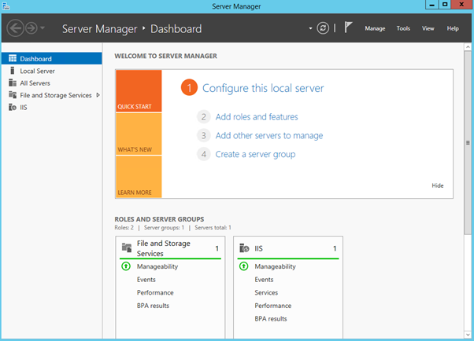Select Active Directory Certificate Services (accept all pre-requisite installation prompts):
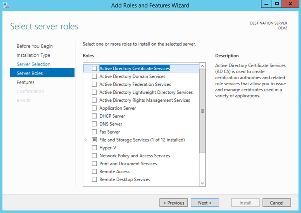Add Certification Authority Web Enrollment role service (accept all pre-requisite installation prompts):
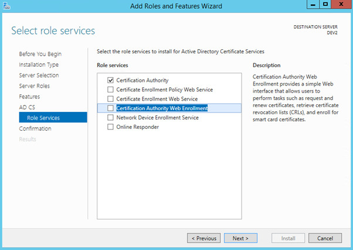Once installation is completed first click on Tasks Flag and then on Configure Active Directory Certificate Services link.
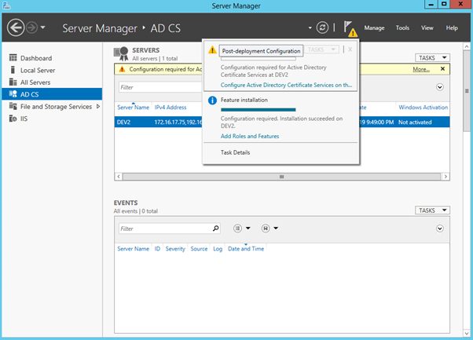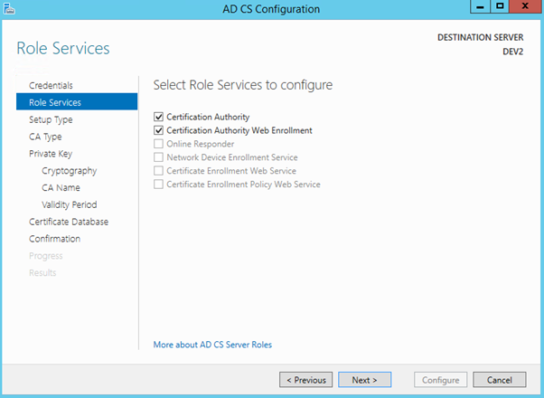As our server is not part of Active Directory domain, only Standalone CA option is available.
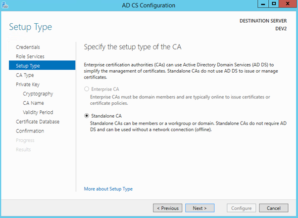Root CA is selected, as this is the first and only Certificate Authority server we will be using in this example.
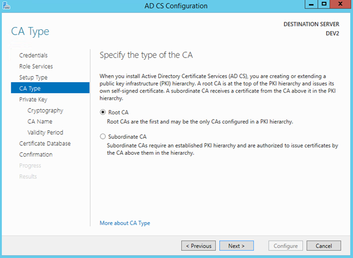Create a new private key for CA. This key (as any private key) must be protected in production environment.
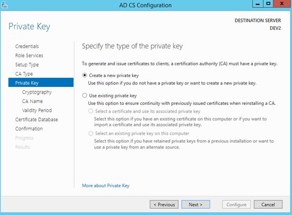Select 2048 key length and SHA512 as the hash algorithm.
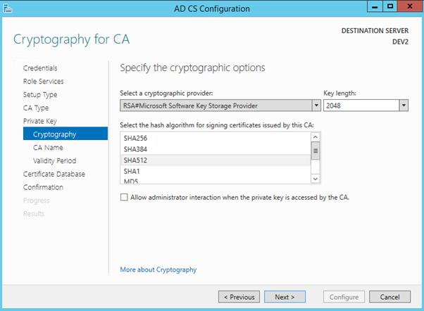Select Common Name for the CA. In this lab environment, I’ve just used the host name of the server.
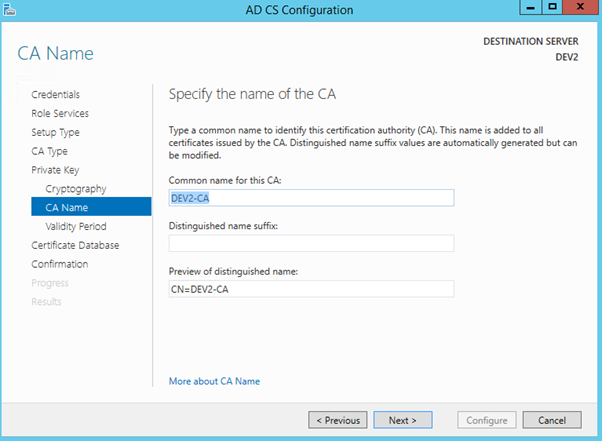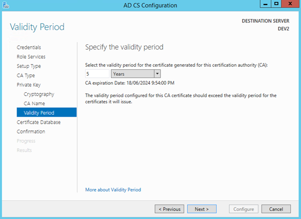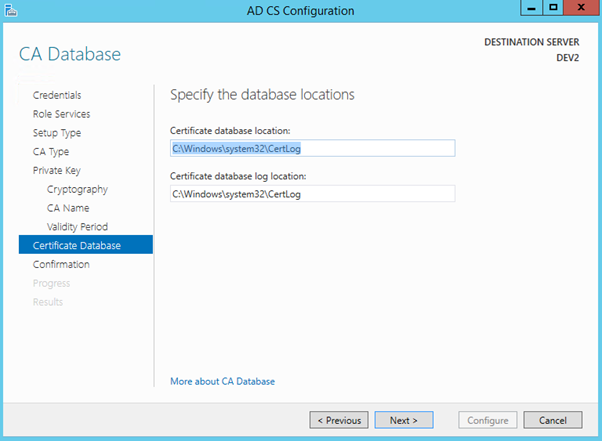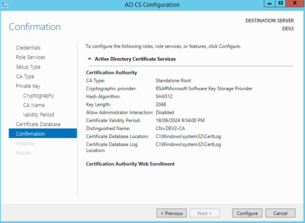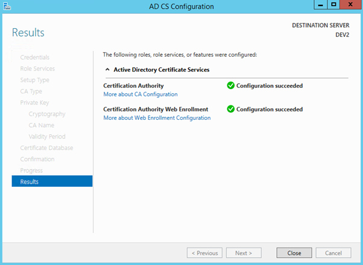Now, it’s time to request the certificate using Web enrollment. Open a browser on the server we’ve just installed CA role and use the following URL. It is HTTP-based, which you wouldn’t use in production, but for lab it should be ok.
http://localhost/certsrv
Click on “Request a certificate” link.
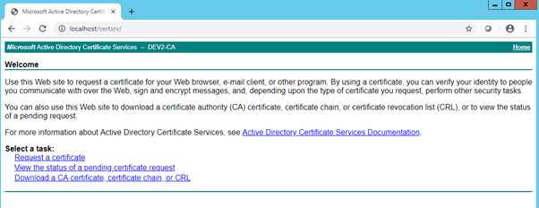Then select “advanced certificate request” link, as we have all required information encoded in CSR.
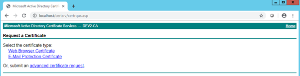Paste CSR content into the request field.
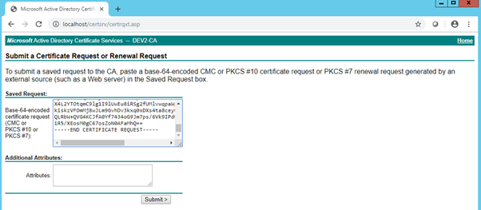With public Certificate Authority, checks will start at this stage and you would have to perform validation steps required by the selected CA. In our case, we will use the procedure below to approve the request.
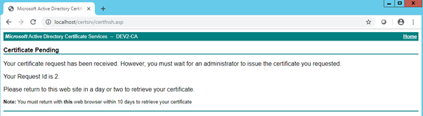Navigate to Administrative Tools > Certification Authority.
Pending Requests will contain the certificate that we need to approve.
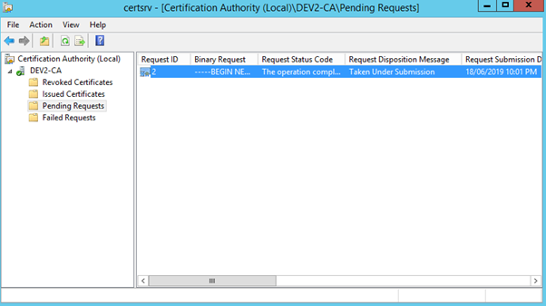Select the certificate and navigate to the following menu: Action > All Tasks > Issue.
Return back to the web browser, but this time press on “View the status of a pending certificate request”.
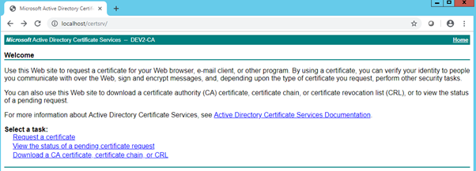Select the certificate request.
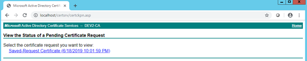Select Base64 and click “Download certificate” link.
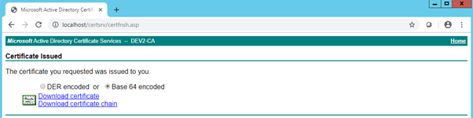The browser will download the file in .CER format. This is the identity certificate. I used CSR generated on ASA and for PA firewall, I will go through the process again, but will paste Palo Alto’s request instead.
Go back to the CA’s starting page (3rd screenshot above), and select “Download a CA certificate, certificate chain, or CRL”.
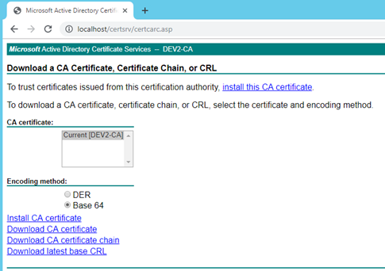Select Base 64 encoding and then “Download CA certificate” link. This is CA certificate that we will use on the firewalls in the next step. This certificate will need to be placed into Trusted Root on all PCs, so they can trust ASA or PA’s certificates. If public certificate authority is used, this step already performed either by browser or operating system vendor.
Step 4. Install Certificate on the Firewall
ASA Firewall using ASDM
We will start installation with uploading CA certificate first. Click on Configuration Tab of ASDM and then select Device Management in tabbed menu on the left.
Navigate to Certificate Management > CA Certificate. See the screenshot details below.
As it is not identity certificate, no private key generation is required. CA stores it’s private key and we just need it’s public key which is embedded in certificate.
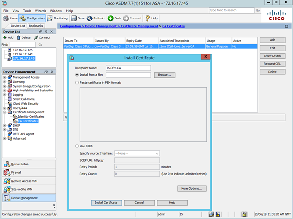The second part of the process is installation of the firewall’s identity certificate. Navigate to Certificate Management > Identity Certificates. Finalize installation by selecting pending certificate and clicking Install button.
Select the file location or paste it in Base-64 text format. Press Install Certificate button.
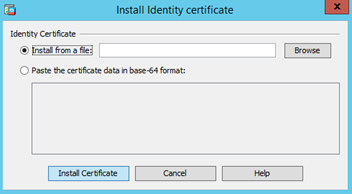Validate that installation was successful by checking that all fields, such as Issued By and Expiry Date are now populated.
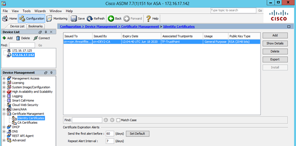ASA Firewall using CLI
Will start installation with CA certificate in similar way as in ASDM. Define a trustpoint (or certificate) for CA.
ASA01(config)# crypto ca trustpoint CA-DEV
ASA01(config-ca-trustpoint)# enrollment terminal
ASA01(config-ca-trustpoint)# crl configure
ASA01(config-ca-crl)# exit
ASA01(config-ca-trustpoint)# exit
Type the following command and paste-in your CA certificate.
ASA01(config)# crypto ca authenticate CA-DEV
Enter the base 64 encoded CA certificate.
End with the word "quit" on a line by itself
-----BEGIN CERTIFICATE-----
MIIC/zCCAeegAwIBAgIQI0h0kVE81pFGq5ymDiDcizANBgkqhkiG9w0BAQ0FADAS
MRAwDgYDVQQDEwdERVYyLUNBMB4XDTE5MDYxODExNDgwOVoXDTI0MDYxODExNTgw
OVowEjEQMA4GA1UEAxMHREVWMi1DQTCCASIwDQYJKoZIhvcNAQEBBQADggEPADCC
AQoCggEBAKhcMUnYIbgdbhA6OaEYUeAHjgcl/xrGyGm6ClJ80sPoxi6MJrk2/Ejr
kFJ48YkWpGVzni6mCMWZzXrG6JgI0CZrV9/DG0G9dgMaDwDKRZqOqd5PVxGr5Okz
tCr9lQET+isXaoVB6ugz0zrgcL3kLsiRQ1rDrqF9fQOavBMlNfTE16v6HxRkkswz
CY98SBhPervcn4J86VF6Rz0O5wZ7AVxta2d3AUXnHNkXI0zT6grdQZiciMNUEDBP
K7XWZ+xnLZBW+sXUXMYJmFxgja1fJkD4r43T1Ye7e719e8gtW+utdbUHoLd9q7rr
Px++m/73+XOjQVSCU604e095r7TmiikCAwEAAaNRME8wCwYDVR0PBAQDAgGGMA8G
A1UdEwEB/wQFMAMBAf8wHQYDVR0OBBYEFPXgrKF+VIErE2UL3J5pI9g8CYpBMBAG
CSsGAQQBgjcVAQQDAgEAMA0GCSqGSIb3DQEBDQUAA4IBAQANnNkhB8gZGPMTvbFT
ZWORcO7946iPY2ouZN1rycx79f908SAqJlEZgBJprIy1hoK7+6dOlRSRsFMog9i2
5AyPCgor3Gftk0yoIZfxHwge5SeO3xlq6qfpUmM3BDqkpLyj8UpmX0VAXfkBr5pp
upMdeMIM+wT4AOLfuSWnln8FKWANuqN6ctPlIHJye2hI9htfrUuw52w64W8TSmjz
Aw5GExGI9TyYrWKF+bORrQfPk2MYBi+5PdQeCukRrsYife0V8FW8rDP7MHCN6Dgf
aBMgnVvILadHEqcHKyj+x8f6JRIMXUuKcoviZfQnAguj5B7UrlNXi76zB2MGL8Lt
SUTI
-----END CERTIFICATE-----
quit
INFO: Certificate has the following attributes:
Fingerprint: f60006bf 3c11022f 76d294f9 2b9de905
Do you accept this certificate? [yes/no]: yes
Trustpoint CA certificate accepted.
% Certificate successfully imported
ASA01(config)#
Now it’s time to install identity certificate. Type in-the command referencing identity trustpoint you created in the Step 2, press Enter and then paste-in Base-64 text from the certificate. As per instruction, type word “quit” on a separate line to signal the end of the certificate.
ASA01(config)# crypto ca import TF-TrustPoint certificate
Enter the base 64 encoded CA certificate.
End with the word "quit" on a line by itself
-----BEGIN CERTIFICATE-----
MIID6TCCAtGgAwIBAgITIAAAAAObg0Pn4qnKjgAAAAAAAzANBgkqhkiG9w0BAQ0F
ADASMRAwDgYDVQQDEwdERVYyLUNBMB4XDTE5MDYyMDEwNDc0NloXDTIwMDYyMDEw
NTc0NlowRDELMAkGA1UEBhMCVVMxEzARBgNVBAgTCkNhbGlmb3JuaWExIDAeBgNV
BAMTF3Zwbi50aHJlYXRmaWx0ZXJpbmcuY29tMIIBIjANBgkqhkiG9w0BAQEFAAOC
AQ8AMIIBCgKCAQEA12Zj9UHbSTp8lrzuXIJm9BGgxGUyeEbtLFxhibBFdlowbQ7s
GOPUuFRZYVDYvbjlinajms8Cj4L5yOZ41COJ7wugpKDHGIH9swC53U0L0iuIRANJ
mIOfcPx53vvPWzdEamj8YBK5hk1KaQsgaEIx/TiMbBYZuska7bqfoWAt6laQfIuI
dHfF4+nlkG9fQp8V7On0z2TZi9lK14N9X6yD5Yv9fO5DiUqNe2cwCS3/fjW9pYqe
YG0mRWB57rY0jcxwoPU1UDPx4YifUq5W0SbSZDNexGJc3epBA7jKXIqg5RwIYGKn
ZPY80BGipeB6tpyvA+5eqQwQ3MsSX5UDCocO8QIDAQABo4IBBDCCAQAwDgYDVR0P
AQH/BAQDAgWgMCIGA1UdEQQbMBmCF3Zwbi50aHJlYXRmaWx0ZXJpbmcuY29tMB0G
A1UdDgQWBBSoWo/rPC0bzvEcF9yfjVcnRsvUzjAfBgNVHSMEGDAWgBT14KyhflSB
KxNlC9yeaSPYPAmKQTA1BgNVHR8ELjAsMCqgKKAmhiRmaWxlOi8vLy9ERVYyL0Nl
cnRFbnJvbGwvREVWMi1DQS5jcmwwRQYIKwYBBQUHAQEEOTA3MDUGCCsGAQUFBzAC
hilmaWxlOi8vLy9ERVYyL0NlcnRFbnJvbGwvREVWMl9ERVYyLUNBLmNydDAMBgNV
HRMBAf8EAjAAMA0GCSqGSIb3DQEBDQUAA4IBAQAG0rLhOBOMK7xY6c5JXadI0C5S
ugjdlqyZ8A5RQARNELyeMMTSSI+CTqQ+UrLD+QNe5EL0N8Gx6OMKut12kWdm/GPH
NmFDKHmYxVox35gj3p/m3pmi7SnwBLfD+d3N+6+OXXgyJC8YqoWXljx6RWQH1+GQ
lwkpnFSj3XGDsxgwizAe6XKYpQzf/PHWj0W8IS2dS1xWbKnFStRltNgQOOdOyCTx
XGEX277epdZYks/6e9u62kh84b62jQet7ffAOc0A9X6wHzTEK6amysz+8WkZ8UL+
7IP7IcO8Jzs3xqJW0O5N+GHeCd7duuxYVT6ph3mrXeZbc+0byYjtAiCjNJ0c
-----END CERTIFICATE-----
quit
INFO: Certificate has the following attributes:
Fingerprint: 07f39730 cd50a849 dac1c9c4 73ce6e81
Do you accept this certificate? [yes/no]: yes
Certificate validated - Signed by existing trustpoint CA certificate.
Trustpoint CA certificate accepted.
% Certificate successfully imported
Use the following show command to see list of installed certificates (note that identity certificate doesn’t have CA prepended):
ASA01# show crypto ca certificates
Certificate
Status: Available
Certificate Serial Number: 20000000039b8343e7e2a9ca8e000000000003
Certificate Usage: General Purpose
Public Key Type: RSA (2048 bits)
Signature Algorithm: SHA512 with RSA Encryption
Issuer Name:
cn=DEV2-CA
Subject Name:
cn=vpn.threatfiltering.com
st=California
c=US
CRL Distribution Points:
[1] file:////DEV2/CertEnroll/DEV2-CA.crl
Validity Date:
start date: 10:47:46 GMT Jun 20 2019
end date: 10:57:46 GMT Jun 20 2020
Storage: config
Associated Trustpoints: TF-TrustPoint
CA Certificate
Status: Available
Certificate Serial Number: 23487491513cd69146ab9ca60e20dc8b
Certificate Usage: Signature
Public Key Type: RSA (2048 bits)
Signature Algorithm: SHA512 with RSA Encryption
Issuer Name:
cn=DEV2-CA
Subject Name:
cn=DEV2-CA
Validity Date:
start date: 11:48:09 GMT Jun 18 2019
end date: 11:58:09 GMT Jun 18 2024
Storage: config
Associated Trustpoints: CA-DEV
Palo Alto Firewall using WebGUI
PAN-OS WebGUI doesn’t split certificate menu for identity and CA certificates, so the process is similar for both certs. Navigate to Device > Certificate Management > Certificates. Identity certificates are nested under CA certificates which provides nice hierarchical view of the chain. The end result will look like in the screenshot below.
In the Step 2 we had CSR prepared. To continue click on the Import button as shown above. Enter certificate name (as typed-in in Step 2) and path to the file.
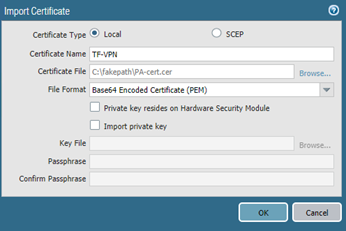Then add CA certificate. Click on Import button on the bottom toolbar.
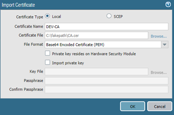Palo Alto Firewall using CLI
Doesn’t seem to be possible as of 8.1.0.
Identity Certificate Backup
To export certificate along with it’s private key, PKCS#12 container is used on both firewalls.
ASA Firewall using ASDM
Navigate to Configuration > Device Management > Certificate Management > Identity Certificates and select the certificate you want to backup. Press Export button.
Type-in the file name to store it on the computer ASDM is launched from and select encryption passphrase. Use P12 extension, as Windows will recognize this as PKCS12 certificate.
ASA Firewall using CLI
Using CLI, type-in the following command. Cisco123 is the secret passphrase to secure the private key.
ASA01(config)# crypto ca export TF-TrustPoint pkcs12 Cisco123
Exported pkcs12 follows:
-----BEGIN PKCS12-----
MIIKpwIBAzCCCmEGCSqGSIb3DQEHAaCCClIEggpOMIIKSjCCCkYGCSqGSIb3DQEH
BqCCCjcwggozAgEAMIIKLAYJKoZIhvcNAQcBMBsGCiqGSIb3DQEMAQMwDQQInrWa
iOlgrnkCAQGAggoAvoSVsNKsM17vIjVKMNdRu3v2It8GwN/F8ZUffRjVQyB+zX5M
2SUZEx8bpQIOC8uG0J0KBDIUbHLXdPaeP7kgr0oWWN9Y/rCEkghdIPVwXLM3CFSG
7JrRJJTUST0WmXQtUhG1p3xWY0n3W2vJRkyf76nlSet8/PaRJggneSWdXFfdhPtk
/GvMcJAWJVf2Ce6mL0r24qyqYDlTOKFxHIEXE1eh3kpD9BoqhSRZ3hew752PD5cb
kVsE0JaWkbUcvDXm8lKjBlK/Ycc9t95ioCYf6erFZO0njRK4D/7jGm/VupPe0RZS
Kvwh9XaGmQ2l/8Itz/qav6BgWLNmI1iUU6eayPJ6GJTSJOeuC3swtUjnNcGBcrAZ
GVKzPOgmGbJ0X2I0+ugKlW2AgwjLxL8t21eMWzO8Vdu4Cb+EAEU4PBUTasm2wAo1
hPUxfW90rEmbMDFGtotQjgbZorfU3Wy8BOTiwWjR/prKalSsAHAzHRq1W+DaaXbH
M0XzgMuQLfHXVKXk4EcbTPwsEMi7UOmHMBEUdX/UeK6u+5JI5J2C7HWT1aiPAy/F
uP1LvVTdhwi0EzJYHqTHmCb36+c3/Ps2y/UiwekvLxqLn+kJJWukHkpHwEgx/yF2
Vx/NwUNPsqDtoyzmMtSjpFGmL1F9XQ7IdU6PBC24OTTF/HTZkejFCFhUIbUH1BJO
8YGvC/3bo2NF2bHLjqRKhY8DZIIYV1rhKKjo0yKZKuNDyd84qIopEqKdli+ThKzT
-----END PKCS12-----
Palo Alto Firewall using WebGUI
To export certificate in PKCS12 format navigate to Device > Certificate Management > Certificates menu, select identity certificate you want to backup and press Export Certificate button on the bottom menu. Type-in passphrase and press OK. The file with .p12 extension will be downloaded by the web browser.
Note, that in contrast to ASA, you can export Base-64 encoded PEM certificate with encrypted private key.
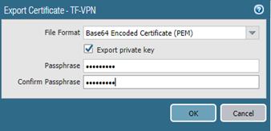The resulting file looks like shown in the screenshot below.
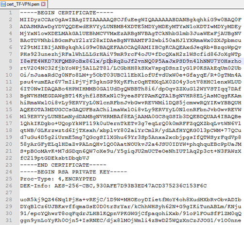Palo Alto Firewall using CLI
Doesn’t seem to be possible as of 8.1.0.
Certificate Operations
Once the certificates are exported in PKCS#12 format, they can be imported on the same device or on another device.
Below are couple of examples how certificate is applied to different services.
Activating certificate for SSL VPN on ASA is done by navigating to Configuration > Remote Access VPN > Network (Client) Access > Any Connect Connection Profiles. Press Device Certificate button and select the identity certificate as shown in the screenshot below.
To use certificate for management interface on Palo Alto, navigate to Device > Setup. Click on Security Communication Settings, as shown in the screenshot below and select certificate.